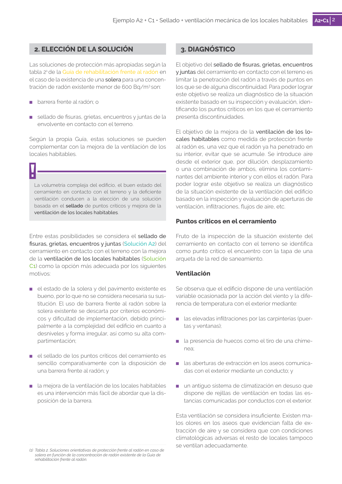

GUIA · 3. DIAGNÓSTICO · versión sin-fecha · capa guia
Formatos: JSON compacto · Markdown · PDF fuente
Ámbito del documento · texto del ámbito · documento y tablas
Tipo: figuras · nivel 1 · sección estimada: 3. DIAGNÓSTICO · padre:
3. DIAGNÓSTICO El objetivo del sellado de fisuras, grietas, encuentros y juntas del cerramiento en contacto con el terreno es limitar la penetración del radón a través de puntos en los que se de alguna discontinuidad. Para poder lograr este objetivo se realiza un diagnóstico de la situación existente basado en su inspección y evaluación, iden tificando los puntos críticos en los que el cerramiento presenta discontinuidades. El objetivo de la mejora de la ventilación de los lo cales habitables como medida de protección frente al radón es, una vez que el radón ya ha penetrado en su interior, evitar que se acumule. Se introduce aire desde el exterior que, por dilución, desplazamiento o una combinación de ambos, elimina los contami nantes del ambiente interior y con ellos el radón. Para poder lograr este objetivo se realiza un diagnóstico de la situación existente de la ventilación del edificio basado en la inspección y evaluación de aperturas de ventilación, infiltraciones, flujos de aire, etc.

PDF fuente redistribuible: copia fiel enlazada en esta página (SHA256 verificado).